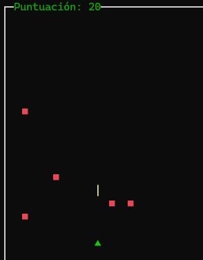
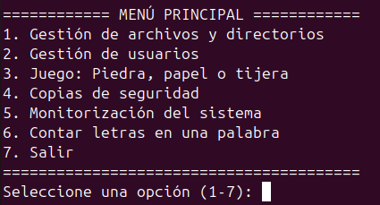

Explora mis proyectos en desarrollo de software, desarrollo de aplicaciones y administración de sistemas.
Juego clásico de cartas en lenguaje C#.
Juego clásico de naves espaciales con Pygame, puntuación y niveles.
 Descarga del proyectoScript en Bash dividido en varios submenus (gestion de archivos y directorios, gestion de usuarios y monitorizacion del sistema), ademas de varias opciones extra (realizar copias de seguridad, algun juego...).
 Descarga del proyectoCalculadora con historial de cálculos y diseño moderno en Android.
Aplicación CRUD para gestionar contactos usando SQL.